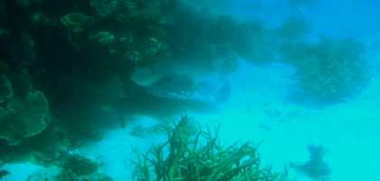
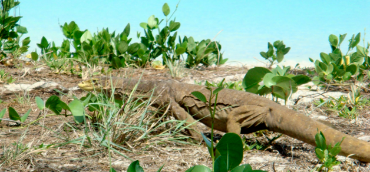

Great Barrier reef
Koraller, en Stingray, En blæksprutte, en haj og ufattelig skønhed
søndag den 25. november 2007

Just another day at the office....
Tim står op 5.30 for at komme på dagens første dykketur Sitet hedder Cobias Hole og skulle være det bedste divesite ved Lizard Island. De skal sejle et par kilometer i gummibåd for at nå dertil. Det er blikstille og solen er netop stået op da de drager afsted. Pigerne og jeg sover lidt længere inden vi tager ind på den smukke strand på Lizard Island. Stranden er perfekt for pigerne: lavt roligt krystalklart vand. Jeg ser en stor blæksprutte på min snorkeltur. Jeg opdager den kun, fordi den uro, mine finner laver, får sprutten til at skifte farve fra brun til blå.

Vi sejler til et af de ydre rev: Ribbon Reef no. 9. Her ligger vi helt alene på et kæmpe rev. På den ene side er der 10 meter dybt og lave koraller og på den anden side, hvor bølgerne bryder Koralhavet er der 1000 meters dybde. Der er endnu en gang fantastiske koraller. Jeg ser for første gang en stor Stingray, svømme lige forbi mig mens jeg dykker alene med min egen guide. Det er imponerende med et vingefang på over en 1 meter, og jeg glemmer faktisk at trække vejret et øjeblik, da jeg kommer til at tænke på Crocodile Steves død. Senere ser vi også en ca. 2,5 lang White Tipped Reef Shark, og jeg håber, at den allerede har fået mad, for ellers plejer hajer at sove om dagen, men man ved aldrig i Australien. Sidst på dykket møder jeg Viola og TIm i overfladen. Her er så fantastisk, og et så rigt live under vandet, at man ikke begriber det.
Tilbage på båden hygger vi inden krokodillebøfferne. Vi får os en lille snak med kaptajnen, og en lang snak med Jeffery fra Arizona.
Om lidt sejler vi videre til næste rev, og næste spændende oplevelse. Viola er blevet en habil snorkler og vi er ved at få svømmehud mellem tæerne. Pigerne når lige at se på billeder hjemmefra på computeren inden de skal sove.
Det er rimelig sjældent at man ser store stingrays, og jeg blev så befippet, at jeg nær ikke havde fået fotograferet den.